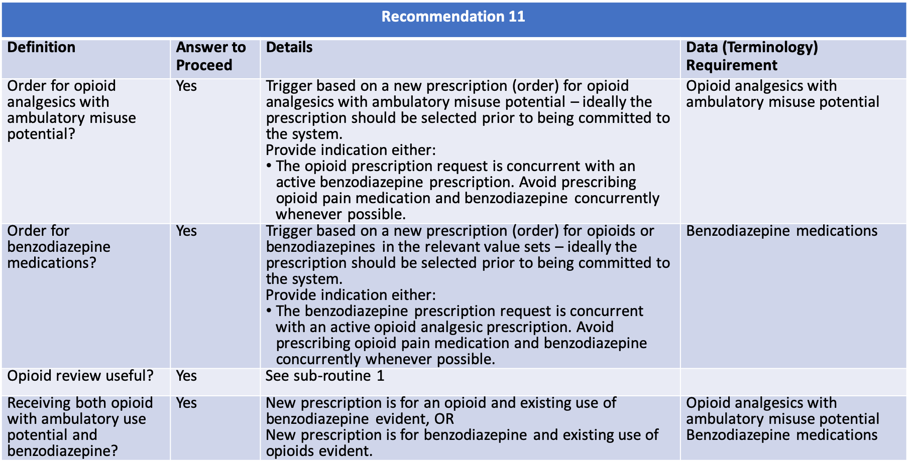
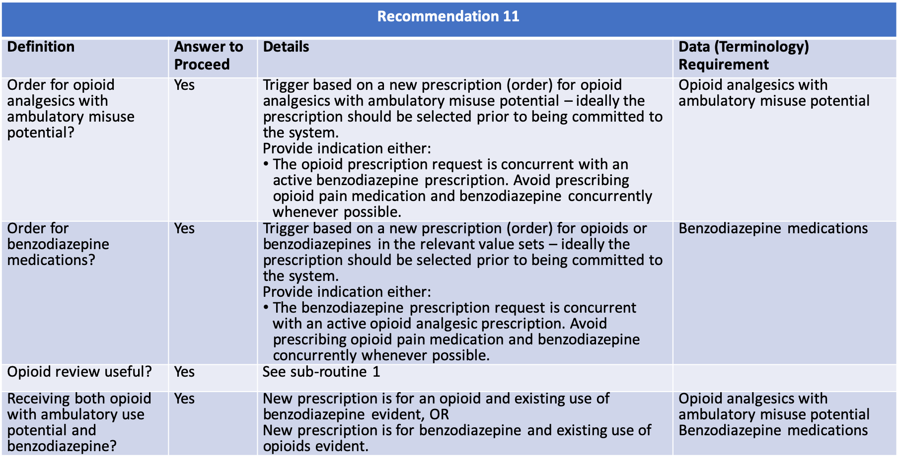

8.11.2 Content 
The following artifacts formalize the description of the logic and behavior defined by this recommendation.
{% include common-libraries-start.html %}
| CDC Opioid Prescribing Guideline Recommendation #11 | PlanDefinition | Event-Condition-Action rule that implements behavior for CDC Opioid Prescribing Guideline Recommendation #11 |
| Recommendation #11 - concurrent opioid pain medication and benzodiazepines prescriptions | Library | Defines the data requirements to support evaluation of recommendation #11 |
| CDC Opioid Prescribing Guideline Recommendation #11 Patient View | PlanDefinition | Event-Condition-Action rule that implements behavior for CDC Opioid Prescribing Guideline Recommendation #11 |
| Recommendation #11 Patient View - concurrent opioid pain medication and benzodiazepines prescriptions | Library | Defines the data requirements to support evaluation of recommendation #11 |
| Recommendation #11 - concurrent opioid pain medication and benzodiazepines prescriptions | STU3 CQL Source | For reference, the complete CQL source for recommendation #11 |
| Recommendation #11 Patient View - concurrent opioid pain medication and benzodiazepines prescriptions | STU3 CQL Source | For reference, the complete CQL source for recommendation #11 |
{% include common-libraries-end.html %}
{% include container-end.html %}
{% include footer.html %}
 
